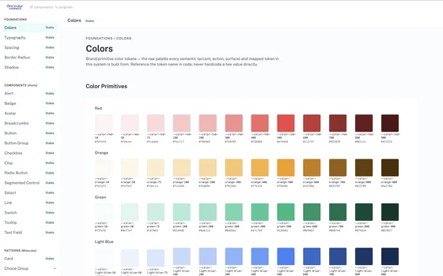

CASE STUDY
I solo-built a design token and component system for a medically integrated dispensing platform used by physician practices, with a focus on neurology — taking it from scattered Figma files to a governed architecture, then bridging it into code.
AT A GLANCE
SOLO
25 / 16 / 3
2–3 + ENG
1
No shared source of truth existed. When I joined, OnePulse Connect had a component library, but it was scattered across different Figma files, with no consistent naming and no shared token source. There was no single place designers or engineers could go to see how a chip, a card, or a table was supposed to look or behave.
SCATTERED ACROSS FIGMA FILES, NO SHARED NAMING

ONE SHARED TOKEN & COMPONENT SYSTEM
I set out to fix that at the source: a token and component system other designers could work from directly in Figma, with clear rules for states, variants, and usage.
Inconsistency here is a safety risk. The screens carry prescriber NPIs, drug NDCs, claim statuses, copay amounts, prior authorization steps. Without a shared library, the same status can look different depending on which screen a pharmacist or technician is looking at. Misreading a status on a controlled substance order or a claim isn't a small mistake.
The platform runs at real scale. OnePulse Connect serves more than 2,000 provider locations across 29 states, managing nearly $1 billion in drug and supplies inventory.
A shared system was the only way to close that gap for good. Ad hoc fixes on individual screens would have left the same risk sitting everywhere else.